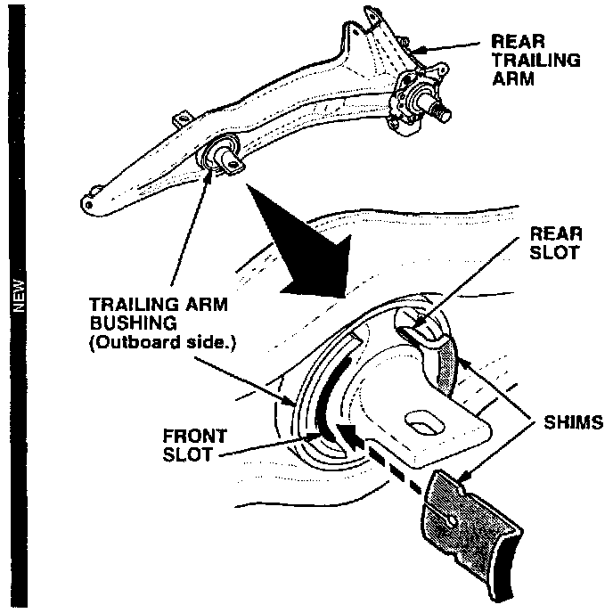
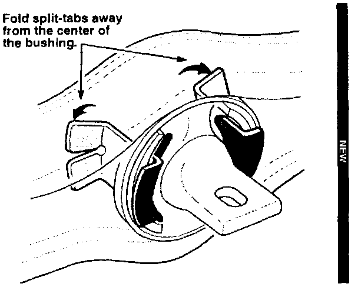

Rear Trailing Arm Bushing Noise
January 28, 1997BULLETIN NO.
90-014
YEAR
*1990 and LATER* [NEW]
MODEL
INTEGRA
VIN APPLICATION
ALL
Rear Trailing Arm Bushing Noise
(Supersedes 90-014, dated July 2, 1990)
SYMPTOM
The rear trailing arms squeak when you drive over speed bumps or into a driveway.
PROBABLE CAUSE
The inner and outer portions of the trailing arm bushings are rubbing against each other.
CORRECTIVE ACTION
Install plastic shims (listed under PARTS INFORMATION) in the front and rear slots of both trailing arm bushings.
1. Raise the vehicle, preferably on a wheel-lift type hoist.
2. Coat the trailing arm bushings and the plastic shims with silicone spray.

3. From the outboard side of the trailing arm, insert a shim in the middle of the bushing's front slot, then insert the other shim in the middle of the rear slot. Make sure the shims go all the way into the slots. Repeat this on the other side.
NOTE: [NEW]
If the vehicle is on a frame-type hoist and the shims will not go all the way in, push the wheels up or down to load or unload the bushings.

4. To keep the shims in place, fold their split-tabs away from the center of the bushings. [NEW]
PARTS INFORMATION
Plastic Shim (four per vehicle are required):
P/N 52387-SH3-305
*REQUIRED MATERIALS [NEW]
Silicone Spray: P/N 08209-0001*
WARRANTY CLAIM INFORMATION
In warranty:
The normal warranty applies.
Operation number: 418148
Flat rate time: 0.5 hour
*Failed P/N: 52370-SR3-A80* [NEW]
Defect code: 042
Contention code: B07
*Template ID: 90-014A* [NEW]
Out of warranty:
Any repair performed after warranty expiration may be eligible for goodwill consideration by the District Technical Manager or your Zone Office. You must request consideration, and get a decision, before starting work.